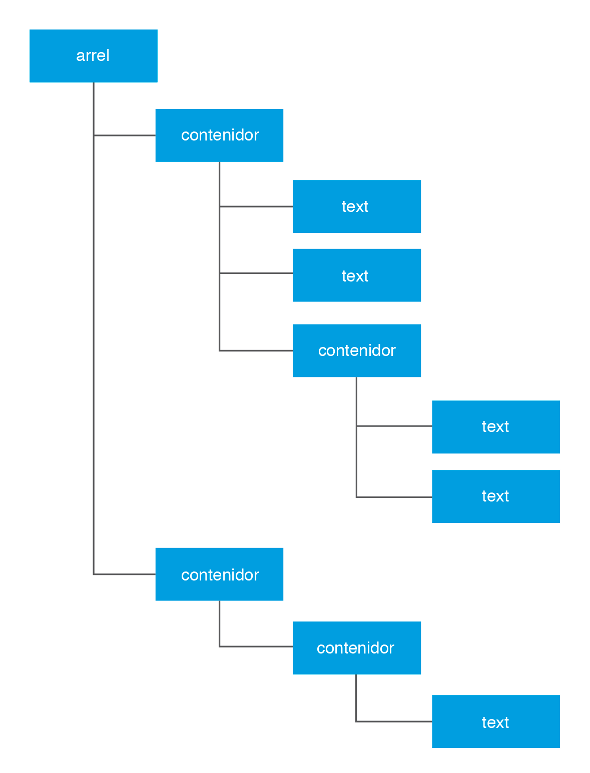

Accés a Dades
# 4.- Documents XML
Hem vist que la manera més còmoda de guardar objectes és amb la seriació, per mig del ObjectInputStream i ObjectOutputStream , però que fora de Java o de Kotlin no és possible l'accés a aquestes dades. I com havíem comentat en l'última nota de la pregunta anterior, també dins de Kotlin podem tenir problemes, perquè el nom de la classe amb el nom del paquet es guarda en el fitxer com a metades, i en un altre programa haurem de tenir la classe creada en un paquet amb el mateix nom, sinó no es podran recuperar les dades. I fins i tot dient-se exactament igual, poden haver problemes si el serialVersionUID de la classe no és el mateix.
També hem vist que per a guardar dades individuals de diferents tipus ens van molt bé les classes DataInputStream i DataOutputStream , però haurem de saber molt bé l'ordre i tipus de dades que estan guardades, sinó, no les podrem recuperar.
I no entrem ja en la possibilitat que diferents Sistemes Operatius representen la informació de forma diferent (per exemple, hi ha Sistemes Operatius que representen els números amb BCD i altres que utilitzen complement a 2).
Per tant, quan vulguem guardar dades que puguen ser llegides per aplicacions fetes en diferents llenguatges i/o executades en diferents plataformes, ens farà falta un format estàndar que tots el puguen entendre i reconéixer, i millor si és autoexplicatiu com és el cas delsllenguatges de marques.
El llenguatge de marques més conegut i més utilitzat és el XML (eXtensible Markup Language)
Els documents XML aconsegueixen estructurar la informació intercalant unes marques anomenades etiquetes, cada etiqueta amb un principi i un final, i que poden anar unes dins d'unes altres, i també contenir informació de text. D’aquesta manera, es podrà subdividir la informació estructurant-la de forma que puga ser fàcilment interpretada.
Tota la informació serà de text, i per tant no hi haurà el problema mencionat abans de representar les dades de diferent manera. Qualsevol dada, ja siga numèrica, booleana o com siga, es posarà en mode text, i per tant sempre es podrà llegir i interpretar correctament tota la informació continguda en un fitxer XML.
És cert que els caràcters es poden escriure utilitzant diferents sistemes de codificació, però XML ofereix diverses tècniques per evitar que això siga un problema, com per exemple, incloent a la capçalera del fitxer quina codificació s’ha fet servir en el moment de guardar-lo.
Amb les etiquetes, XML aconsegueix estructurar qualsevol tipus d’informació jeràrquica. Es pot establir certa similitud entre la forma com la informació es guarda en els objectes d’una aplicació i la forma com es guardaria en un document XML. La informació, en les aplicacions orientades a objectes, s’estructura, agrupa i jerarquitza en classes, i en els documents XML s’estructura, organitza i jerarquitza en etiquetes contingudes unes dins les altres i atributs de les etiquetes.

Imaginem que volem representar les dades dels empleats com els de l’aparat anterior utilitzant un format XML. No existeix una única solució, però és obligatori que totes respecten la jerarquia del model. Un possible format podria ser el següent:
1
Andreu
10
32
1000.0
2
Bernat
20
28
1200.0
3
Clàudia
10
26
1100.0
4
Damià
10
40
1500.0
Però aquesta també podria ser una manera de representar-lo:
I podem imaginar moltes altres solucions, combinant considerant com atributs o subetiquetes les diferents característiques dels empleats que volem guardar. Aquest seria el problema principal del XML, les múltiples solucions. Però també és veritat que totes elles són fàcils d'entendre.
Llicenciat sota la Llicència Creative Commons Reconeixement NoComercial CompartirIgual 2.5